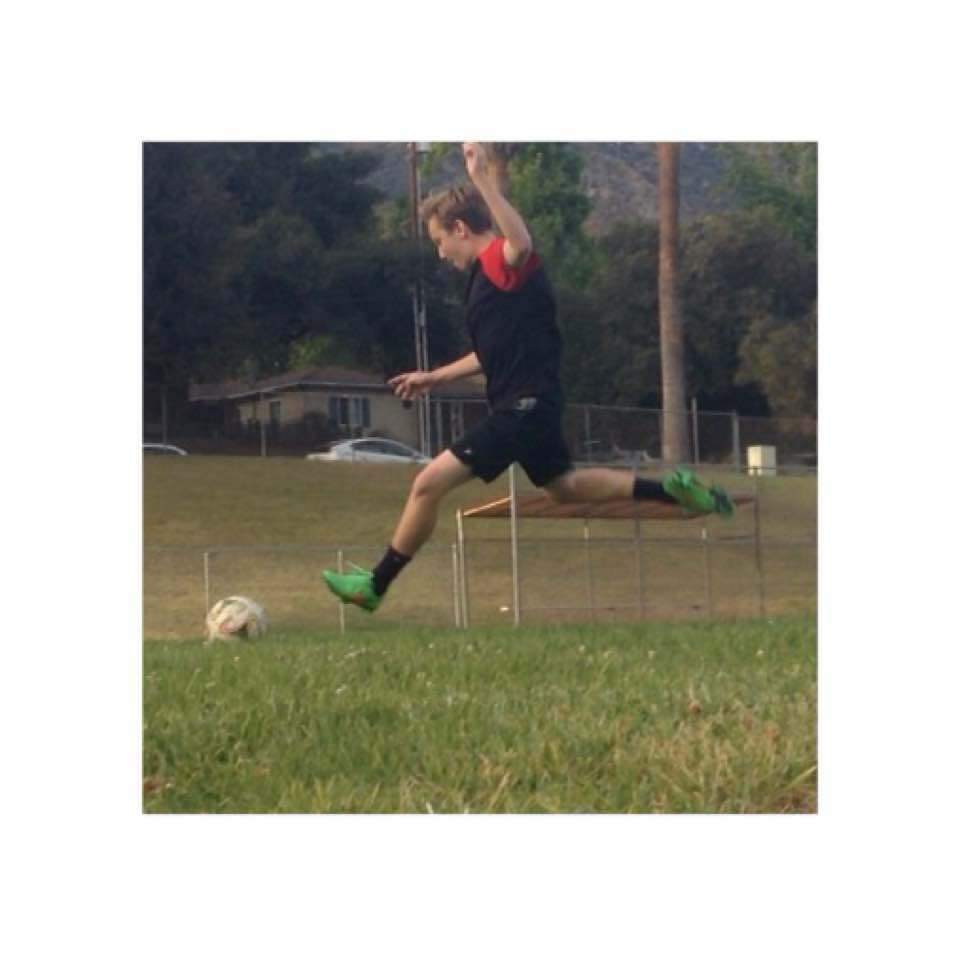

Hello! My name is John Walkiewicz and I am currently a student at Pasadena High School. I am a part of clubs such as Class of 2019 and Boys Volleyball Club. Through the Boys Volleyball Club we were able to create the first Varsity Boys Volleyball team in school history! The subjects that I enjoy the most would have to be APP Academy and AP Biology. These are things that I would want to study in college and possibly have a career in because computer science is very fun and their is no limit to the kind of possibilities you can create with it. I also would like to study Biology because I find the whole subject very interesting and would possibly benefit me if I choose to go into the medical field.
Feel free to contact me via gmail @JohnWalkiewicz
